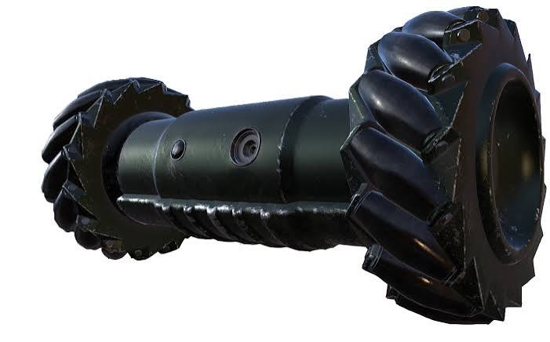
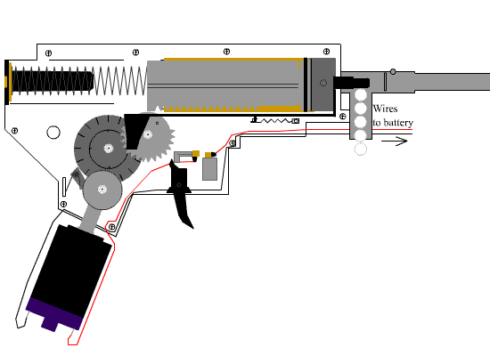

My favorite project I've ever created so far. I devloped this project over the course of fall semester and winter break of my 2nd year in community college. The main inspiration for this project is from my favorite game of all time, Rainbow Six Siege. In that game, there are two sides, attackers and defenders. Before the start of every round attackers are allowed to scope out the map and find the site where defenders are located. To do this, they have access to a two-wheeled jumping drone with a camera embedded into it. My project has the exact same functions, and like the game, can be controlled by a phone.

The main mechanism to drive the robot is similar to that of an airsoft gun:

As you can see there is a mutilated gear, rack, spring, motor, and gear train. The motor drives the gear train, which drives the mutilated gear, allowing the rack to move back and compress the spring, up until the mutilated gear reaches its part with no teeth, the spring will now be released, pushing the airsoft pellets out. My robot has the same exact parts and works the same exact way, except there are two springs and instead of launching airsoft bullets, it's launching itself! I did not come up with this idea, to make a robot launch itself into the air using the same mechanics of an airsoft gun. This project was only possible through the youtuber, Basement Creations his jumping robot project was my main inpiration, I used his 3D design as my main reference when designing the mechanical parts of my project. So big thank you and shoutout to him!
Here are the main electronic components used for this project:
I created the main controller board using perfboard allowing me to solder all the components together on a small compact board. The main star of the show is the ESP32-S3 Sense with its camera board attached to it. This allowed me to recreate the same experience an attacking operator would have. As the microcontroller is an ESP32, it allowed for seamless wireless communication between the phone and robot. Talk about servo later
Used AI assistance for the look and feel of the controller hella mane
The gear and motor holder kept breaking as it couldn't handle the force of the springs after being released. The main culprit of this problem was the orientation of printing. Create simple sketch of it. After chaning the orientation of the print the full layers were now getting hit, not just the side of multiple layers.
Forming the aluminum linear guides. This is more of an assembley issue but solving it was crucial for the robot to work properly. Essentially I had to create holes in these hollow aluminum pipes so that smaller pipes could get fitted into them, this allowed the main robot to be held together without things like glue or adhesives, as well as act as linear guides for the spring to compress, without them the springs would not work properly. I didn't have the proper tools to drill into aluminum, so I improvised, I bought a small dremel and drilled into the side just enough to start drilling a hole into it. This may seem like a small problem, but if I couldn't solve this assembley problem the project would not have been possible.
Here's a quick demo of the robot being controlled and jumping:
The max height the robot reached was 14.3 cm. This was without the electronics though, I believe this can be obtainable (and farther) with the electronics by changing the trajectory of the launch, using lighter components, and lighter materials.